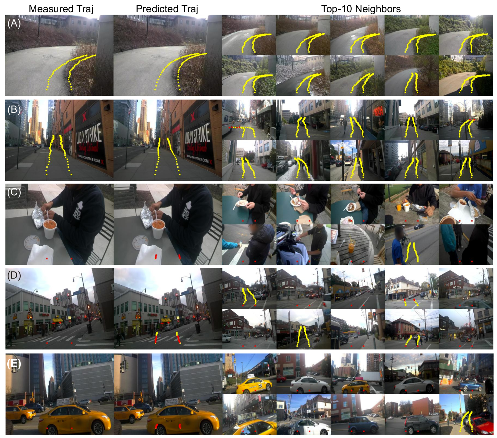
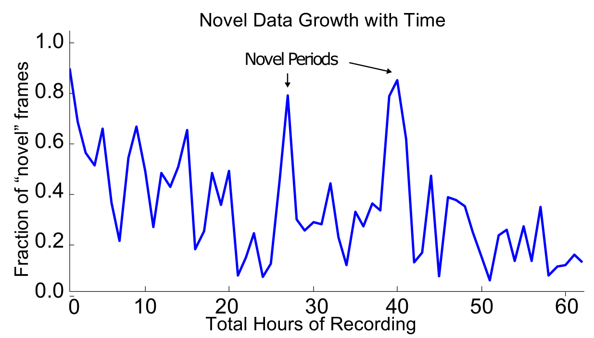
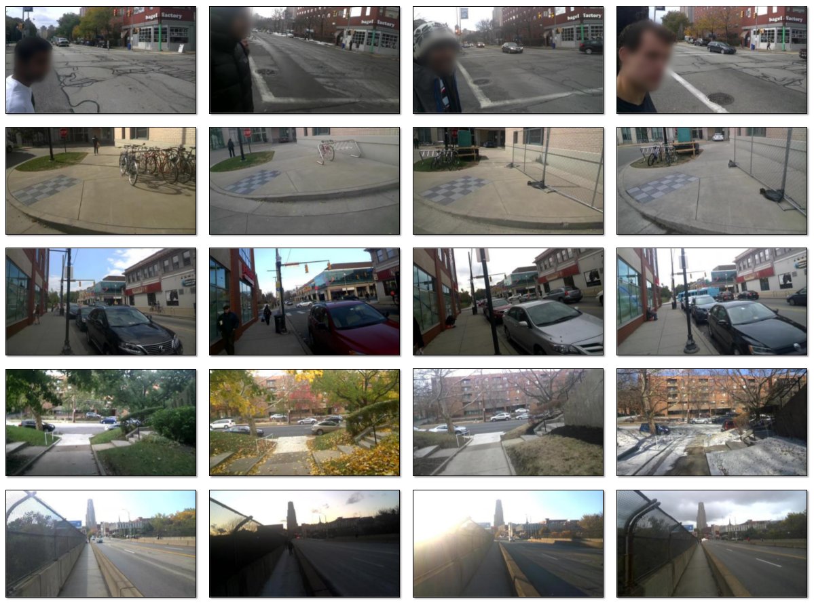
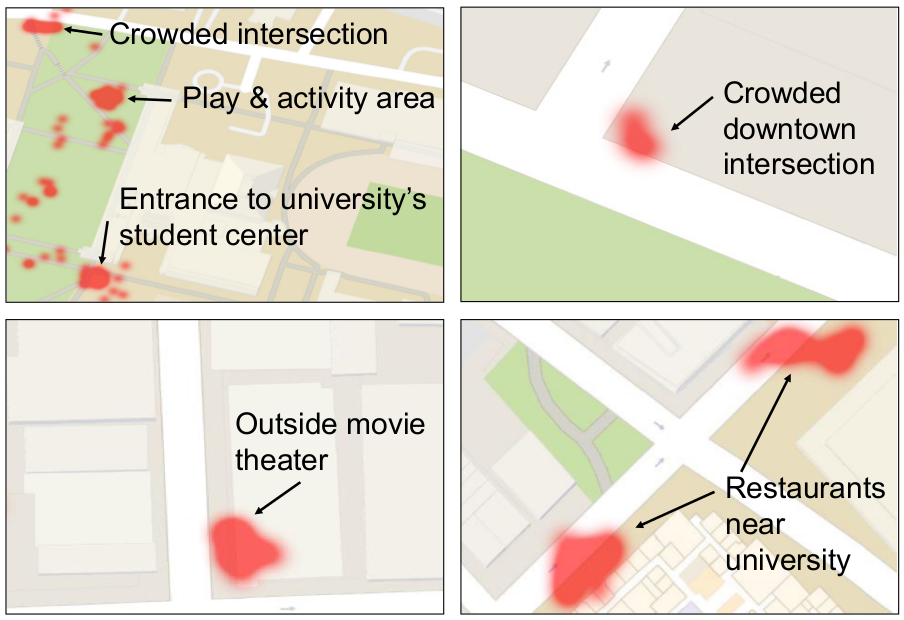

KrishnaCam: Using a Longitudinal, Single-Person, Egocentric Dataset for Scene Understanding Tasks

Prediction of general behaviors that hold across different events and/or locations: (A-B) following a sidewalk
(in both frequently visited and novel locations) (C) remaining stationary while eating food, (D-E) stopping at new
intersections or when there is traffic.
Appears in WACV 2016
People
Abstract
We record, and analyze, and present to the community, KrishnaCam, a large (7.6 million frames, 70 hours) egocen- tric video stream along with GPS position, acceleration and body orientation data spanning nine months of the life of a computer vision graduate student. We explore and exploit the inherent redundancies in this rich visual data stream to answer simple scene understanding questions such as: How much novel visual information does the student see each day? Given a single egocentric photograph of a scene, can we predict where the student might walk next? We find that given our large video database, simple, nearest-neighbor methods are surprisingly adept baselines for these tasks, even in scenes and scenarios where the camera wearer has never been before. For example, we demonstrate the ability to predict the near-future trajectory of the student in broad set of outdoor situations that includes following sidewalks, stopping to wait for a bus, taking a daily path to work, and the lack of movement while eating food.
Paper
|
|
Additional Materials
Dataset
KrishnaCam is a large (7.6 million frames, 70 hours) egocentric video stream that spans nine-months of the life of a single computer vision graduate student. The dataset was recorded using Google glass, and contains 30 fps, 720p video, but no audio. All recording was performed in outdoor, public areas or in the camera-wearer's home.
- Videos can be found here
Interesting Results

Due to the redundency in daily life, the rate novel frames
are observed decreases with time. Days recording in new locations.

Although the egocentric camera is not stationary, long-
term recording captures changes in a scene over time. From top
to bottom: changes in companion, movement of a bicycle stand,
changes in parked cars, season, and lighting.

Red regions indicate locations where (on average) more
than four people are present in images. These locations are university hangouts areas, blocks with popular restaurants and movie
theaters, and busy intersections.
Acknowledgments
Support for this research was provided by the National Science Foundation (IIS-1422767), the Intel Corporation’s Egocentric Video ISRA, and by Google.
Comments, questions to Krishna Kumar Singh